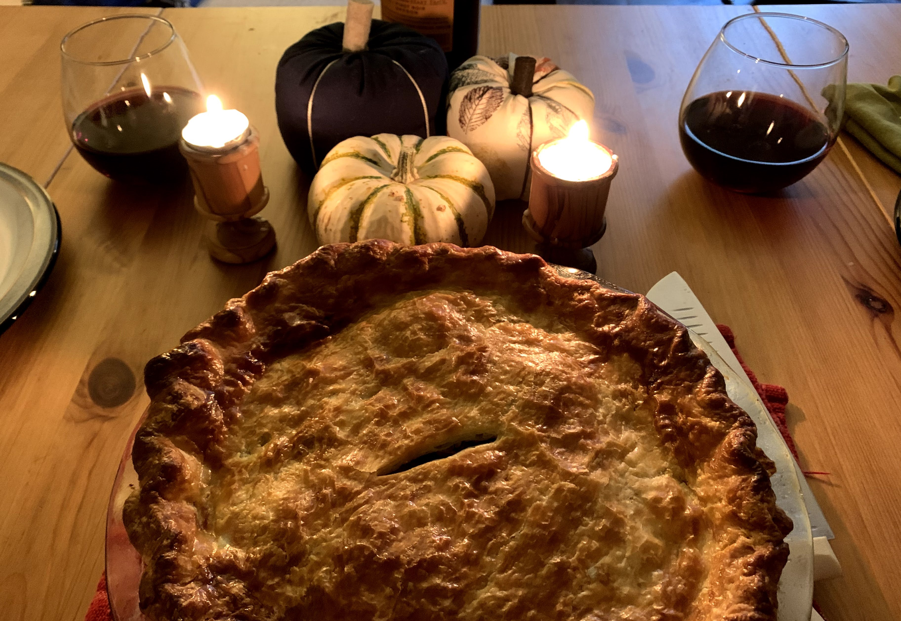

Spiced Veggie Pie
by: Anna Leuning
This pie's filling was inspired by vegetarian Indian samosas.
Ingredients
- 2 prepared 9-inch pie crusts
- 1/2 cup moong dal (soaked overnight)
- 2 medium potatoes
- 1 1/2 tbsp vegetable oil
- 1 1/2 tsp cumin seeds
- 1 tbsp coriander seeds (crushed)
- 2 tsp fennel seeds (crushed)
- 8-10 black peppercorns (crushed)
- 1/4 tsp hing/asafoetida
- 1/8 tsp turmeric
- 1/2 tsp red chili powder
- 1/4 tsp amchur
- 1/2 tsp garam masala
- 1 tsp coriander powerder
- 1 tsp finely chopped fresh ginger
- salt to taste (3/4 tsp kosher salt)
- 1 tbsp cashews (chopped)
- 1 tbsp raisins (chopped)
- 1/2 cup + 2 tbsp green peas (soaked in warm water for 10-15 minutes before using)
- 1 egg

Method
- Peel and boil potatoes.
- Drain the soaked dal, set aside.
- Mash the potatoes.
- Heat oil in a pan over medium heat. Add hing, cumin seeds, fennel seeds, coriander seeds, peppercorns. Cook 1 minutes.
- Add chopped cashews, raisins, ginger. Cook 1 minute.
- Add moong dal, potatoes, and peas. Mix.
- Add remaining spices; garam masala, red chili powder, amchur, turmeric, coriander, salt.
- Remove from pan and let cool overnight in the fridge.
- The following day, bring the filling out of the fridge and let it warm closer to room temperature.
- Preheat the oven to 475°F.
- While the filling sits at room temperature, roll out one of the pie crusts. Line the pie plate with the crust and gently dock the bottom and sides.
- Beat the egg with 1 tablespoon of water. Apply a thin layer of egg wash to the bottom and sides of the crust.
- Chill the bottom crust in the fridge while you roll out the top crust.
- Fill the pie and cover with the top crust. Cut four 1-inch slits near the center of the top crust to allow steam to escape during baking. Crimp the edges with your fingers or a fork.
- Apply a thin layer of egg wash to the top crust.
- Bake for 40 to 60 minutes until the crust is deeply golden brown.
- Let cool partially before serving.